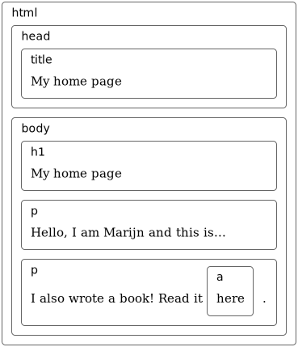

In this blog I am goning to talk about the Document Object Model (DOM) functions, but the first question which arises is What is DOM ?
When a Web Page is opened in browser, browser retrieves the page HTML text and parses it. The browser build a model of the Document's structure and uses the model to create(draw) the page on the screen. Document is like a live data structure which user can read and modify. If it is modified the web page will be updated according to the changes.
Take a look at the code given below(taken from the book eloquent javascript):-
<!doctype html>
<html>
<head>
<title>My home page</title>
</head>
<body>
<h1>My home page</h1>
<p>Hello, I am Marijn and this is my home page.</p>
<p>I also wrote a book! Read it
<a href="http://eloquentjavascript.net">here</a>.</p>
</body>
</html>
The page created by the above code will be strucuted like this :-
Every Document is represented as a box, and for each box there is an object to which we can interact and find out the things like, which HTML tag ? or what is the content in the tag etc.
This representation is called the Document Obect Model.
Now let's come back to the topic of the blog Document Object Model (DOM) Functions.
DOM functions are used to do many kind of work such as:-
and much more...
I will covering some important function from above listed categories
1.Selecting and Creating Reference of an element/tag.
As the name says these functions are used to create a Referenceof a html tag on which you can add event listener and perform the task as required. Let's start with the functions now:-
(i) getElementByTagName();
This function is used to select HTML element or create Reference of a HTML element by help of HTML tags. It search all elements with the given tag name. It gives an array like object called Nodelist, through which we can access the tags and perform the desirable tasks.
look at the example given below:-
var myParagraphs = document.getElementsByTagName(“p”);
the above line will select all the "<p>" tags from the HTML document and return a Nodelist to the variable "myParagraphs". To access it look at the code snippet given below:-
var myParagraphs = document.getElementsByTagName(“p”);
for (i = 0; i < myParagraphs.length; i++) {
if (myParagraphs[i].className == “std_class”) {
myParagraphs[i].onclick = function() {
this.style.backgroundColor = “#f00”;
}
}
}
Here after the selection is done we used a for loop to use all the paragraph tags remember I told this earlier getElementByTagName(“p”) gives a array like object(NodeList). This program is doing a simpple task, it is searching for the paragraphs with a class attribute having value "std_class" when it is found a click event is being added and the backgroundColor is changed to red. so here click is the event and background color is the trigger.
There is another selector getElementByClassName() it works same as getElementByTagName() the only difference is the selection of element is done by class attribute.
(ii) getElementById();
This function is used to select HTML element or create Reference of a HTML element by Id attribute. It search single element with the provided unique id as an argument, through which we can access the tags and perform the desirable tasks.
look at the example given below:-
myId = document.getElementByID(“roll-no”);
the above line will select the element with Id roll-no To access it look at the code snippet given below:-
var myId = document.getElementById(“roll-no”);
myId.style.display = “block”;
myId.style.backgroundColor = “#f00”;
myId.style.border = “solid 1 px #00f”;
First we select the elements with ID roll-no then changes the display style, added background Color and added border of the element.
(iii) querySelector() and querySelectorAll()
These functions are the combinations of getElementById() , getElementByTagName() and getElementByClassName().
With these function we can select HTML elements with help of class , id or tags which ever you want.
look at the example given below:-
//selecttion using querySelector()
var myId = document.querySelector(“#roll-no”); //selecting element with id roll-no
var myClass = document.querySelector(".sixth"); //selecting first element with class sixth
var myTag = document.querySelector("a"); //selecting the first anchor tag
//selection using querySelectorAll()
var allClasses = document.querySelectorAll(".abc"); //selecting all element with class abc
var allTags = document.querySelectorAll("p"); //selecting all paragraph element
I hope you have noticed some difference in the above code snippet. If yes your observation skill is very good but if you haven't no problem, I will tell you, notice there is no Id selection in querySelectorAll() and also see the comments which has benn provided.
The reason there is no id selection for querySelectorAll(), the reason for this is querySelectorAll() selects all the element of given class/tag which means if a file has 3 element with same class , all three elements will be selected and same goes with selection of tag, if someone give "p" as a argument to querySelectorAll() it will select and create reference for p tags, and querySelectorAll() also returns a NodeList.
In contrast querySelector() selects only the first element it encounters,and select and create reference for that particular element.
(iv) Node
Any element on a page including text and white space of a DOM structure is known as Node.
Available Nodes in DOM are:-
- node.childNodes
- node.firstChild
- node.lastChild
- node.parentNode
- node.nextSibling
- node.previousSibling

This is a pictorial representation of relationship between the nodes
I will write another blog about nodes very soon
2.Creating an element( createElement() )
As the name says this DOM function is used to create a new HTML element. while I was writing this section of blog I realized we can greate HTML in javascript and that is really cool thing, OK let's get back to the topic.
Consider the code snippet given below:-
var myNewListItem = document.createElement(“li”)//creates a list element
var myNewPara = document.createElement(“p”);//creates a paragraph element
The new element (here li and p) will be created and added to the DOM.
These are useful when you want a particular element to get added added to the DOM as soon as some task is finished or a evet is trigerred, for example add a paragrph as soon as a button is clicked.
But creating an element will not decide where in the DOM it will be added, you wanna add it at the end or add it between two elements. This thing will be take care by Node (remember the last topic if not scroll a bit up and you will get that) and then appending it.
3.Modifying The DOM
Everything about the DOM data structure can be changed.
For adding a child node to an parent element node, we can use:-
(i) appendChild();
It puts the node at the end.
(i) insertBefore();
This function takes two arguments.
It inserts the node given as first argumnent before the node given as second argument.
Take a look at the code snippet below
<p>One</p>
<p>Two</p>
<p>Three</p>
<script>
let paragraphs = document.getElementsByTagName("p");
document.body.insertBefore(paragraphs[2], paragraphs[0]);
</script>
(iii) replaceChild();
This function also takes two arguments.
It replaces a child node with a new one. The first argument will be the new node and second one will be the node which will be replaced.
The replaced node must be the child node of the element on which the method is called.
Have a look at the code snippet below:-
// Create a new text node called "Water"
var textnode = document.createTextNode("Water");
// Get the first child node of an <ul> element
var item = document.getElementById("myList").childNodes[0];
// Replace the first child node of <ul> with the newly created text node
item.replaceChild(textnode, item.childNodes[0]);
// Note: This example replaces only the Text node "Coffee" with a Text node "Water"
//output
//before replacing
- Coffee
- Tea
- Milk
//after replacing
- Water
- Tea
- Milk
createTextNode() function creates a new text Node that we can insert into document and make it show up on the screen.
It's a kind of alternative for createElement();
(iv) getAttribute(); / setAtrribute();
getAttribute(); function gives the access to the value of any attribute of any element on the page.
the argument of the function contains the name of the attribute.
have a look at the given code snippet:-
<div id="div1">Hi Champ!</div>
// in a console
const div1 = document.getElementById('div1');
//=> <div id="div1">Hi Champ!</div>
const exampleAttr= div1.getAttribute('id');
//=> "div1"
const align = div1.getAttribute('align')
//=> null
setAttribute(); function is used tp replace the value of an atrribute.
In other words, assigning new value to an existing atrribute is done by setAtrribute();
It takes two arguments, first argument is thr atrribute and the second attributte is the new value you want to give.
setAtrribute(); can be used in a toggler wich switches to dark mode. We can create a class in CSS and can set the value of class attribute of as soon as the toggler is clicked. This example I got when I was writing this blog.
4.Getting the value of HTML element
These functions are used to access the value of the tag which we can use to display it on user interface.
(i) innerText
innerText function is used to access the text of any HTML element, Which we can use to display on the UI.
innerText can also be used to change text of element or adding the text to a element.
Look at the code snippet given below:-
<div> class = 'text'> Hello! </div>
var text = document.querySelector('.text');
console.log(text.innerText); //=> Hello! content in the div
text.innerText = 'hi';// changing the text
console.log(text.innerText); // => hi text changed
(ii) innerHTML
The innerHTML property can be used to write the dynamic html on the html document.
innerHTML is a property of every element. It tells you what is between the starting and ending tags of the element, and it also let you sets the content of the element.
look at the code snippet below for a better understanding.
<p id="myParagraph">
This is my paragraph.
</p>
document.getElementById("myParagraph").innerHTML = "This is my paragraph";
(iii) value
The value property sets or returns the value of the value attribute of a text field. The value property contains the default value OR the value a user types in (or a value set by a script).
It is basically used to get the value of from the input field and then manipulated and displayed on User interface.
have a look at code snippet given below:-
<!DOCTYPE html>
<html>
<body>
Name: <input type="text" id="myText" value="Rishabh">
<p>Click the button to change the value of the text field.</p>
<button onclick="myFunction()">Try it</button>
<script>
function myFunction() {
document.getElementById("myText").value = "Kunwar";
}
</script>
</body>
</html>
here as soon as the button is clicked the value of the input tag is changed from Rishabh to Kunwar.
With this I came to end of this blog please share your views, you can connect to me through LinkedIn
Thank you for reading this blog.